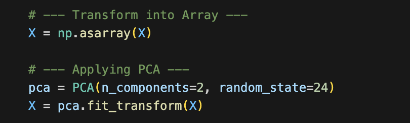
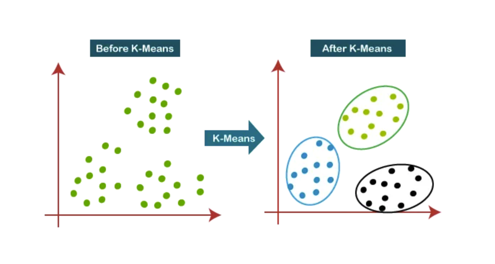
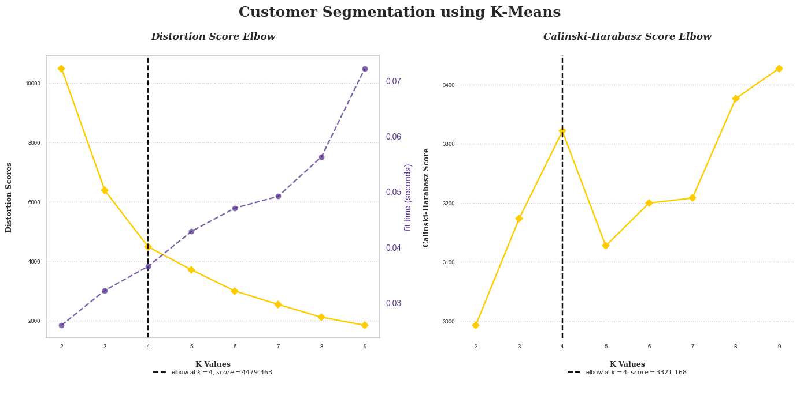
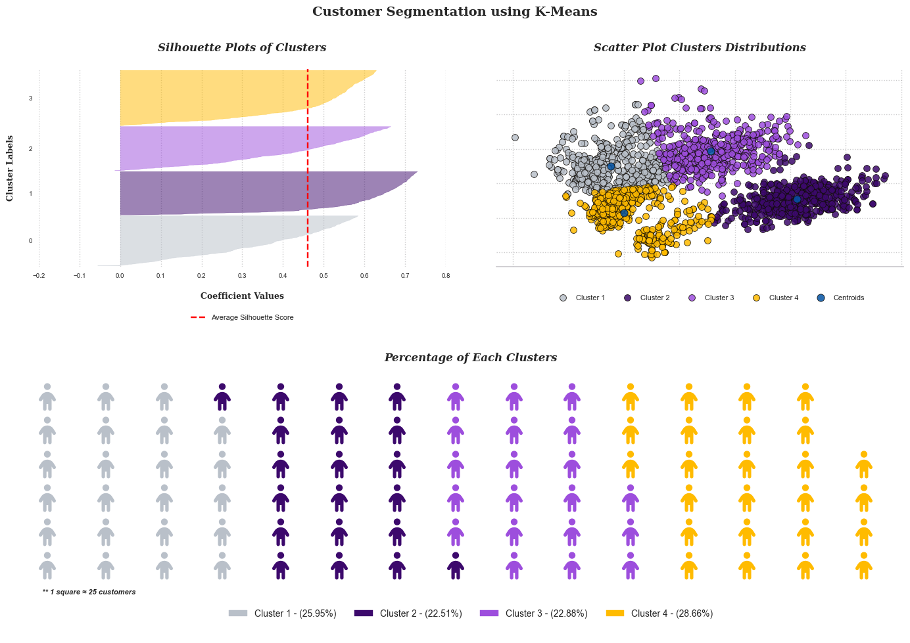
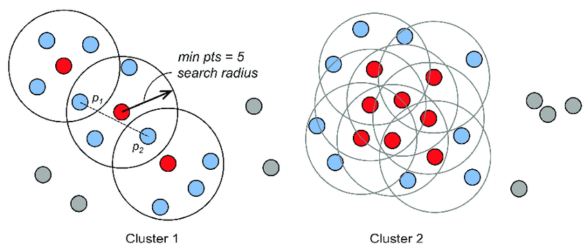
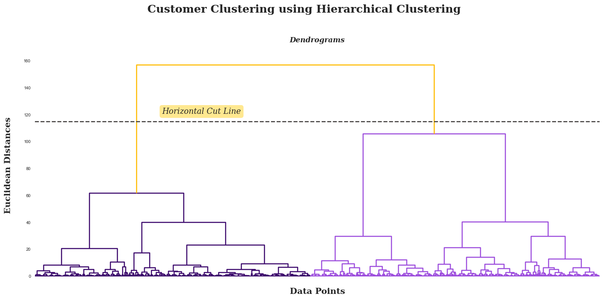
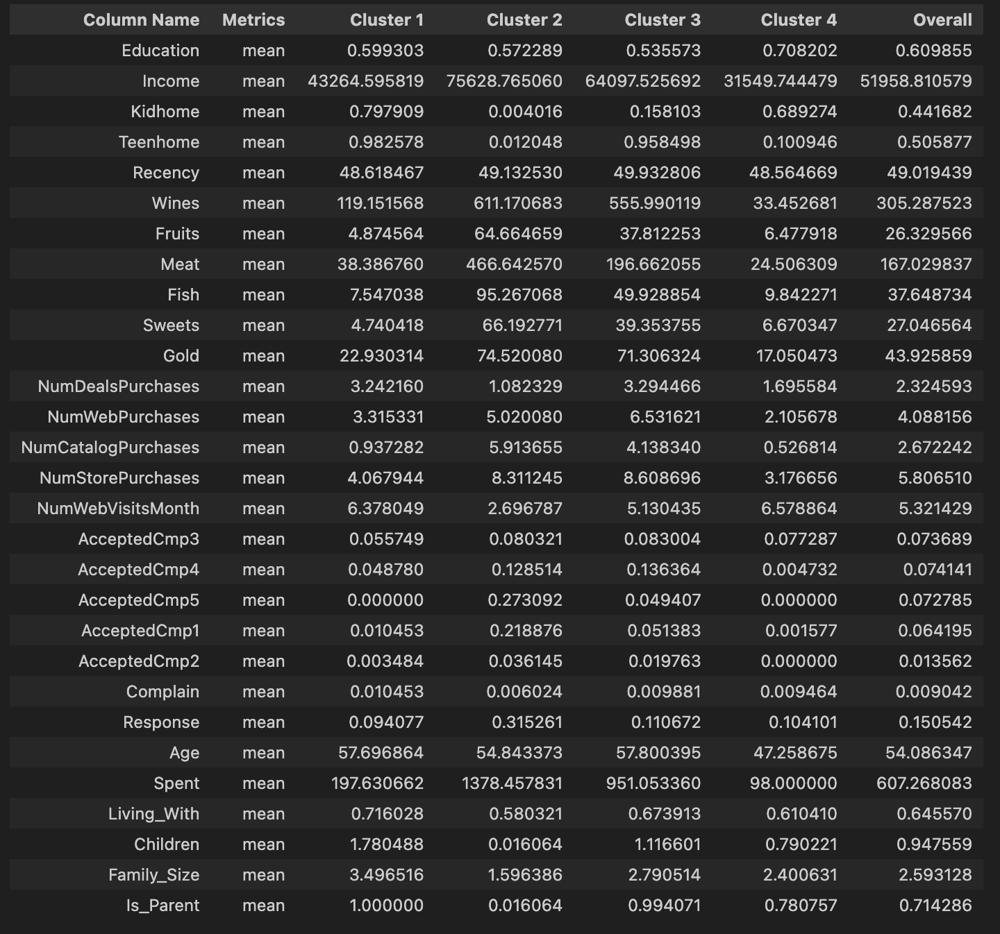

Clustering for Effective Marketing Strategy

Introduction
Customer Personality Analysis is a comprehensive analysis of an organization's ideal clients. It aids businesses in gaining a better understanding of their customers and makes it easier for them to tailor their products to the specific needs, behaviours, and concerns of various customer types.
Analysing the personalities of customers enables a business to modify its product based on its target customers from various customer segments. For instance, instead of spending money to market a new product to every customer in the company's database, the company can analyse which customer segment is most likely to purchase the product and focus marketing efforts on that segment alone.
Objectives:
In this project, we will be utilizing this dataset to perform clustering analysis. The aim is to identify distinct clusters of customers based on their personality traits and characteristics. This will allow us to develop tailored marketing strategies for each cluster, optimizing our efforts to effectively target and engage different customer segments. Our objectives include:
- Grouping customers into clusters using various clustering models.
- Perform interpretation and analysis of the groups (profiling) that have been created.
- Provide marketing suggestions based on profiling results and analysis conducted.
Clustering Models:
- Partition based (K-Means)
- Density based (DBSCAN)
- Hierarchical Clustering (Agglomerative)
Dataset Description:

Data Cleaning
Perform the following data cleaning and feature engineering steps:
- Eliminate null values: Clean the dataset to make it more reliable.
- Derive "Age": Calculate the age of a customer from the "Year_Birth" field, which indicates the customer's birth year.
- Generate "Spent": Create a new feature to represent the total amount spent by a customer across different categories over two years.
- Create "Living_With": Use the "Marital_Status" field to identify the living situation of couples.
- Create "Children": Establish a feature to represent the total number of children in a household, including both kids and teenagers.
- Establish "Family_Size": Create a feature to indicate the total number of family members in a household.
- Introduce "Is_Parent": Implement a feature to indicate whether a customer is a parent.
- Simplify "Education": Divide this attribute into three categories to make it more manageable and understandable.
- Discard unnecessary features: Remove redundant features that could complicate the analysis and prediction process.
- Eliminate outliers: Remove outliers from the dataset to ensure more accurate statistical analyses and machine learning predictions.

Data Preprocessing
This section will perform some pre-processing before using clustering models.
Dropping Variables
The first stage is to remove variables that are not needed for the clustering process. In this case 'AcceptedCmp3', 'AcceptedCmp4', 'AcceptedCmp5', 'AcceptedCmp1','AcceptedCmp2', 'Complain', 'Response' will be removed.
Scaling
Our subsequent stage involves scaling the dataset. Scaling is of paramount importance as it handles the dispersion in the dataset, applies a linear transformation to convert the data into a specific range, and consequently enhances the effectiveness of clustering algorithms, resulting in more reliable clusters. Here, we will employ a standard scaler, which normalizes the features by subtracting the mean and scaling to unit variance, ensuring that the data attributes have a uniform scale.
Hopkins Test
The next step is to perform a statistical test using the Hopkins statistical test for the preprocessed dataset. This test measures the clustering tendency of data, or in other words, the extent to which meaningful clusters exist in the data set to be clustered.
The hypothesis of the Hopkins statistical test is as follows:
- H0 (Null Hypothesis): The dataset is not uniformly distributed (contains meaningful clusters).
- H1 (Alternative Hypothesis): The dataset is uniformly distributed (lacks meaningful clusters).
The criteria for the Hopkins statistical test is:
If the value is between {0.7, ..., 0.99}, we accept H0, indicating the data has a high tendency to cluster.

Principal component analysis
Principal Component Analysis (PCA) is a technique used in unsupervised machine learning approaches, such as clustering. Its main purpose is to transform high-dimensional data into a smaller number of dimensions, while preserving as much significant information as possible. The use of PCA prior to deploying a clustering algorithm helps in reducing the dimensionality, minimizing data noise, and lessening computational cost.
In this particular project, we'll be reducing the number of features to two dimensions. This reduction enables us to effectively visualize the clustering outcomes.
Clustering
K-Means
K-Means clustering is a straightforward yet potent algorithm utilized in unsupervised learning to tackle clustering issues. The methodology involves segregating a given dataset into a certain number of clusters, denoted by "k". These clusters are marked as points, and all observations or data points are associated with their closest cluster. Subsequent to this, calculations and adjustments are performed. The process is then reiterated with these fresh adjustments until the desired result is obtained.
🖼 K-Means Clustering by Pranshu Sharma
Prior to implementing K-Means, the first step is to determine the optimal number of clusters. This can be achieved using the elbow score. In addition, the Calinski-Harabasz index will be employed to help establish the ideal number of clusters.
According to the results of the elbow method and the Calinski Harabasz score, the optimal number of clusters for the K-Means algorithm is four. The subsequent steps will apply the optimal number of clusters, visualise the clusters distribution plot, and evaluate their performance using silhouette plots.
The provided image depicts an analysis of the data clustered into four distinct groups: cluster 1, cluster 2, cluster 3, and cluster 4. These clusters account for 25.95%, 22.51%, 22.88%, and 28.66%, respectively, of the data points, demonstrating a relatively even distribution across the clusters.
In the silhouette plot, silhouette coefficient values for each cluster are displayed. All clusters are found to be higher than the average silhouette score, indicating that the clustering solution is suitable. In addition, the thickness of the silhouette plots reveals a similar range of variation across all clusters, indicating that the clustering solution is consistent. Notably, clusters 2 and 4 have a slightly thicker silhouette, indicating greater cohesion within these clusters.
The waffle chart at the bottom provides a clear visual representation of the customer distribution across clusters by displaying the percentage of customers in each cluster.
The quality of this clustering solution will be evaluated in the future using a variety of metrics, including the Davies-Bouldin index, silhouette score, and Calinski-Harabasz index.

DBScan
DBSCAN (Density-Based Spatial Clustering of Applications with Noise) clusters points according to the minimum number of points and the Euclidean distance. It also identifies as outliers points in low-density regions. The two parameters of DBSCAN are MinPoints and Epsilon.
🖼 DBScan Clustering by David A. Bonneau
Before applying the DBSCAN algorithm, we must define the previously mentioned DBSCAN parameters. Since PCA has already been performed in two dimensions, we will use the default value (4) for MinPoint. For Epsilon values, we will determine the distance between each data point and its nearest neighbour using Nearest Neighbours, and then sort them before plotting them. Using the plot, we can then determine the greatest value at the graph's curve.

The subsequent step is to implement DBSCAN and evaluate the results based on the results of the maximum curvature and the previous MinPoint values.

From the implementation of DBSCAN, eight clusters are formed. Clusters 1 and 2 have more data points than other clusters. However, there are some outliers detected because some points are too far from the other data points (DBSCAN labelled those points as outliers with a -1 value). The next step is to evaluate the clustering quality provided by DBSCAN.

In summary, the DBSCAN clustering results show moderate performance according to Davies-Bouldin Index and Calinski Harabasz Index, but poor performance based on the Silhouette Score. This suggests that some data points might not have been correctly assigned to their clusters, leading to overlap between clusters.
Hierarchical Clustering
Hierarchical clustering organises data into a clustering tree. Hierarchical clustering begins with each data point being treated as a separate cluster. Then, it repeatedly identifies the two clusters that are most similar and merges them until all of the clusters have been merged together. The objective of hierarchical clustering is to generate a hierarchical series of nested clusters. Dendrograms will be utilised to visualise the evolution of groupings and determine the optimal cluster size. Using the generated dendograms, we then determine the greatest vertical distance that does not intersect any other clusters. After that, draw a horizontal threshold line at both ends. The optimal number of clusters equals the number of vertical lines traversing the horizontal line. In the example given below, the optimal number of clusters would be four.

🖼 Dendogram and Hierarchical Clustering Result by Prasad Pai
The initial step in our approach entails creating a dendrogram. Following its construction, we then proceed to draw a horizontal line that intersects the longest vertical line without a crossing horizontal line in the dendrogram. Upon completion of these steps, we proceed to assess the dendrogram that has been formulated.
The dendrogram depicted above, which is based on Euclidean distances, suggests that the optimal number of clusters is two. This conclusion is reached by examining the tallest vertical line, or the one with the largest distance, which is the first line or branch. Following this, we'll employ this cluster number in the Agglomerative Clustering algorithm. Subsequently, we will visualize the resultant clusters and carry out an evaluation of their effectiveness.

The final phase of our analysis involves evaluating the quality of the clusters generated by the Hierarchical Clustering algorithm. This evaluation will be accomplished using several metrics including the Silhouette Score, Davies-Bouldin Index, and the Calinski-Harabasz Index. These indices will provide a robust assessment of the quality of our clustering solution.

Models Evaluation
In this section, the quality of the clustering outcomes produced by the algorithm will be evaluated. This table compares the clustering results of each clustering algorithm (Davies-Bouldin index,silhouette score and Calinski-Harabasz Index).

- K-Means Clustering: K-Means has the lowest Davies-Bouldin Index (0.782), suggesting that the clusters are well-separated. Its silhouette score is the highest (0.461), indicating that the samples are well-clustered. Furthermore, the high Calinski-Harabasz Index (3321.168) suggests that the clusters are dense and well-separated.
- Hierarchical Clustering: Hierarchical Clustering has a slightly higher Davies-Bouldin Index (0.884) than K-Means, suggesting less well-separated clusters. Its silhouette score (0.441) is slightly lower, indicating a lower quality of clustering. However, the Calinski-Harabasz Index (2203.244) is still relatively high, indicating that the clusters are dense and well-separated, although not as much as in K-Means.
- DBSCAN: DBSCAN has the highest Davies-Bouldin Index (1.56), suggesting poorly separated clusters. Its silhouette score is negative (-0.288), indicating that samples might have been assigned to the wrong clusters. The Calinski-Harabasz Index (224.921) is much lower than the other two models, suggesting that the clusters are not as dense or well-separated.
Conclusion: According to the evaluation metrics, K-Means Clustering seems to perform best for this specific dataset, followed by Hierarchical Clustering. DBSCAN has the poorest performance according to these metrics. The next step is to conduct profiling to determine the characteristics of each cluster.
Cluster Profilling
This section will identify the characteristics of the clusters created by K-Means through cluster profiling.
Based on the table above, it can be concluded that each cluster has the following characteristics:
- Cluster 1 (Low Income, High Family, Less Engaged Buyers): These customers have the lowest income levels among all clusters. They usually have a high number of children at home (both young kids and teenagers), leading to a large family size. Their online activity is relatively high with frequent website visits, but they make fewer purchases across all channels. Their product preference leans towards wine, with low spending in other product categories. They tend to accept marketing campaign 3 slightly more often than others, but overall campaign acceptance is low.
- Cluster 2 (High Income, Single, Variety Buyers): These customers earn the highest income. Most of them do not have children and live alone or with a partner, leading to small family size. They are active buyers across all channels, especially web and catalog, and spend more on all product categories than any other cluster. They are particularly interested in wines and meats. They have the highest acceptance rates for most marketing campaigns, particularly campaign 4 and campaign 5.
- Cluster 3 (Mid-High Income, Parent, Balanced Buyers): These customers have above-average income levels and typically have one child at home. They are the most active catalog purchasers and prefer to buy a balanced mix of products, with particular interest in wines and meats. They have above-average campaign acceptance rates, especially for campaign 4.
- Cluster 4 (Low-Mid Income, Young, Less Engaged Buyers): These customers have below-average income levels and are generally younger than customers in other clusters. They have a high number of teenagers at home and an average-sized family. Despite frequent website visits, they make fewer purchases, mainly in-store. Their spending is low across all product categories. They have the lowest acceptance rates for marketing campaigns, particularly campaigns 4 and 5.
Marketing Strategy Suggestions
Based on the profiling above, the following are suggestions for targeted marketing strategies for each cluster:
Cluster 1 (Low Income, High Family, Less Engaged Buyers):
The focus for marketing to this cluster could be on providing value for money and bulk-buying deals. Given their larger family size and lower income, offers could include family-sized bundles or deals on essentials. It could also be beneficial to provide an option for affordable installment plans. As these customers seem to respond more favorably to Campaign 3, this suggests they could be more receptive to direct marketing strategies.
Cluster 2 (High Income, Single, Variety Buyers):
With high income and no children, these customers likely have more disposable income and may appreciate higher-end products. The marketing plan could target them with exclusive offers or premium product lines. Given their high activity online and the good response to Campaigns 4 and 5, online marketing and personalized email campaigns could be effective.
Cluster 3 (Mid-High Income, Parent, Balanced Buyers):
Customers in this cluster might be interested in diverse product offerings and could appreciate deals on a variety of products. As they show an inclination towards catalog purchases, sending them targeted and personalized catalogs might be effective. Introducing reward or loyalty programs can be a good strategy to motivate them to spend more across different product categories.
Cluster 4 (Low-Mid Income, Young, Less Engaged Buyers):
These younger, less engaged buyers might be interested in products that are trendy and affordable. A social media marketing campaign could be a great way to engage this cluster. Also, introducing a referral program could encourage them to bring in friends or family. As they have low interaction with campaigns, especially Campaigns 4 and 5, improving these campaigns' relevance and attractiveness to this demographic might increase engagement.